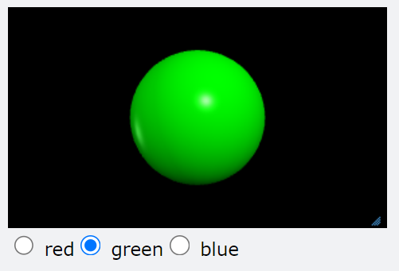

Radio Buttons¶
{kind=link}
A group of radio buttons offer exclusive choices. Checking one will uncheck all others. All radio buttons in a group must have the same name attribute.
- radio(bind=myfunction, text='mytext', name='mygroup')¶
- Parameters:
bind (function) – The function to be called when the box is checked or unchecked.
text (string) – The text displayed next to the box.
name (string) – Name of the group of radio buttons to which this belongs.
checked (boolean) – If True, the box is checked. Default False.
pos (attribute of canvas) – Location of checkbox. Default is scene.caption_anchor.
disabled (boolean) – If True, the checkbox is grayed out and inactive.
delete() –
mywidget.delete()deletes the widget.
A group of radio buttons that control the color of a sphere:
ball = sphere(color=color.red)
def rfun(evt):
if evt.text is'red':
ball.color=color.red
elif evt.text is 'green':
ball.color=color.green
elif evt.text is 'blue':
ball.color=color.blue
redbutton = radio(bind=rfun, text='red', name='colors', checked=True)
greenbutton = radio(bind=rfun, text='green', name='colors')
bluebutton = radio(bind=rfun, text='blue', name='colors')
Radio Button Event Attributes¶
The argument of the event handler function (‘evt’, in the code above) will have the following attributes (properties of the radio button at the time it was clicked):
evt.textevt.checkedevt.disabled
Additionally, any attributes you have created for the widget (for example, name or id), will be available as attributes of evt.
See also